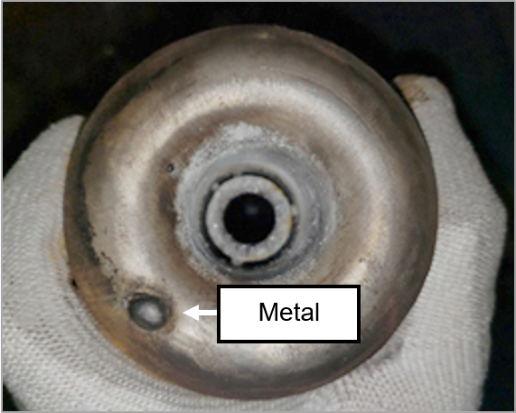

Removing the Floor Burners
MLT-MR-054A
Revised: 2023-05-25
Purpose/Application
Defines procedures for removing the floor burners.
PPE Required
General
Bump cap, safety glasses, hearing protection, long sleeves, steel-toed safety shoes.
Required for Specific Sections
Cut-resistant gloves, heat-resistant gloves, face shield, fire-resistant jacket, chemical splash goggles, chemical-resistant gloves, cotton forming gloves.
Safety Hazards
Safety Controls
- The Hazard Communication Standard (HCS) requires chemicals to have Safety Data Sheets (SDS), please refer to the SDS for chemicals listed in this SOP for additional hazards, first aid measures, toxicological information, accidental release measures, and handling/storage of the chemical.
- Exposure to heat can cause illness and death. The most serious heat illness is heat stroke. Other heat illnesses include heat exhaustion, heat cramps, and heat rash. Precautions should be taken to avoid heat illness any time temperatures are high, and the job involves physical work.
- Air monitoring device, ventilation (when in confined space).
- Confined space authorization.
- Review the Emergency Action Plan before performing work.
Equipment Needed
- Socket wrench, adjustable wrench, 19-liter (5-gallon) bucket, lint-free towel, rod, flashlight, Allen wrench, screwdriver, adjustable wrench, sparger height tool (SCM1-5-7, with 1-5/8 in. tall setting), blind flanges, flange gaskets, bench vise, powder-free nitrile gloves, fine-bristle stainless steel brush, wire brush, pick, scale, oxygen-safe Teflon tape, torque wrench, Teflon ferrules, crystal simple green solution.
- Access to DFC software.
Comments
- Use the buddy system.
- Stay hydrated.
- Some sections in this document require specific PPE and tools/equipment to perform tasks, and may also have specific safety hazards. Read a section thoroughly before starting the work. Personnel performing the tasks in this document must have completed the required training.
- Personnel must have valid certification in Operation and Maintenance of Gas Systems (up to 5 bar) by the appropriate company before working on gas skids.
Removing the Floor Burners
Follow this procedure to remove the floor burners:
-
Note:Close and lockout tagout all the valves on the combustion safety skid and nitrogen skid.
Lockout tagout.
- Follow plant requirements for lockout tagout.

-
In DFC, go to the Melter Cooling H3C screen and click the Burner
Skid tab.
- Click the BNRx-WTR-FL button.
- Click the Alarming tab.
- Check the Shelved checkbox to disable the burner cooling water alarm.

- Turn off the burner cooling water booster pumps at the local disconnects.
- Shut off the individual burner cooling water supply and return valves that are located underneath the melter.
-
Inspect the burner for physical damage and wear. This includes but is not limited to:
- Cracked or dented burners may require replacement.
- Look for evidence of moisture to find small cracks.
- Burners with metal contamination must be replaced.
- Inspect for erosion on the inside and outside of the burner tip.
- The burner wall thickness is 2.1 mm (0.083 inch).


Approval
|
Person |
Role |
|---|---|
|
Michael Hu |
Melting Process Engineer – R&D |
|
Connie Martin |
Process Global Safety Manager |
Revision History
| 2020-11-10 |
Approved by Michael Hu, Melting Process Engineer – R&D |
|
Original Issue |
|
| 2021-07-15 |
Approved by Michael Hu, Melting Process Engineer – R&D |
|
Updated with the following changes: Various revisions in all sections |
|
| 2023-05-25 |
Approved by Michael Hu, Melting Process Engineer – R&D |
|
Updated with the following change Added Section 8. |